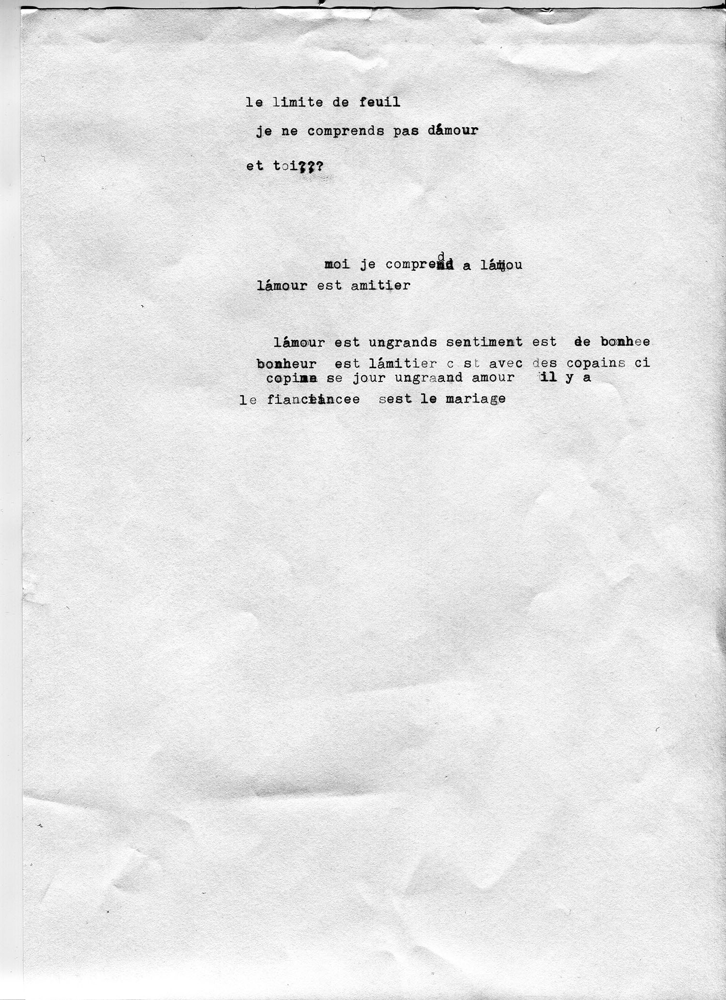

13-29 janvier 2020,
Résidence au Trait d'Union
Développé et modéré par Julia Clever

[EN]
For the second time, a group of RITCS-students comes to the Marolles to work together with the beneficiaries of the Marollian daycentre “Le huitième jour” in our “Transversal atelier”. Here, transversal means to leave the well-known environment and the artistic disciplines we study and practice usually. It means to build bridges to other media, places and people. During our residency in the Hectolitre from 13th till 30th of January 2020, we swing out from daycentre and artschool, immerse ourselves in the world of the Hectolitre and its neighbourhood, meet you and practice artistic research together.
[FR]
Pour la deuxième fois, une groupe d’étudiants de l’école RITCS vient aux Marolles pour travailler ensemble avec les bénéficiaires du “ huitième jour” dans la rue haute pendant l’"atelier transversal”. Ici, transversal veut dire de quitter nos entourages bien connus et les disciplines artistiques qu’on étudie d’habitude.
Ca veut dire de bâtir des ponts ces des autres médias, endroits et gens.Pendant notre résidence dans l’hectolitre du 13 au 30 janvier, on va se balancer hors du centre du jour et l’école d’art, nous immerger dans le monder de l’hectolitre et son voisinage, vous rencontrer et pratiquer de la recherche artistique ensemble.
Photo credit : Conversation sur une machine à écrire entre Jetse et Jahwad, dans la cadre du travail : “Correspondances”, Transversaal atelier 2019. All rights reserved.